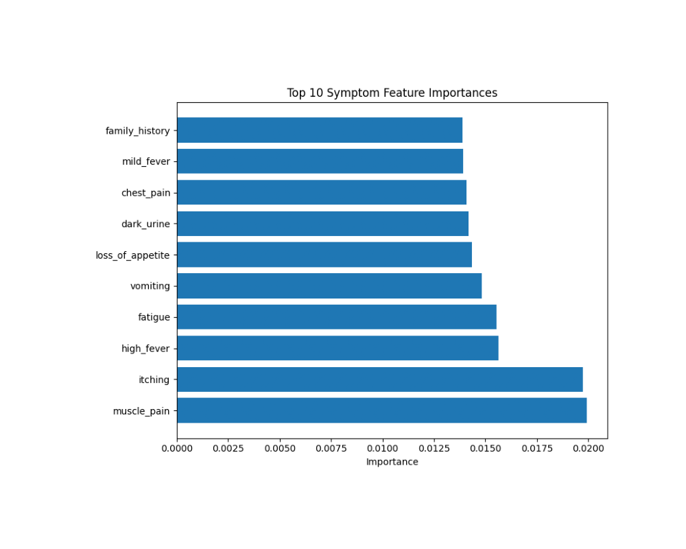

Model Accuracy
This section shows the overall accuracy of the model on both training and testing datasets. The model demonstrates high accuracy in classifying diseases based on symptoms.
Confusion Matrix
The confusion matrix visualizes how well the model predicts each disease class. The diagonal elements represent the number of points for which the predicted label is equal to the true label. Off-diagonal elements are those that are mislabeled by the classifier.
Classification Metrics
This visualization shows the precision, recall, and F1-score metrics for the model. These metrics provide insights into the model's ability to correctly identify true positives while minimizing false positives and false negatives.
Normal Distribution of Prediction Confidence
This visualization shows the normal distribution of prediction confidence across all diseases. The red curve represents the theoretical normal distribution, with shaded areas indicating one and two standard deviations from the mean (capturing 68% and 95% of the data respectively).
Disease Confidence Levels
This chart shows confidence levels for the top 15 diseases in the model. Higher values indicate greater prediction accuracy for that particular disease, while the red vertical line represents the mean confidence across all diseases.
Feature Importance
This chart shows the most important symptoms used by the model to make predictions. Higher importance scores indicate symptoms that have greater influence on the model's decision-making process.

Symptom-Disease Correlation
This heatmap shows the correlation between symptoms and diseases in the dataset. Brighter colors indicate stronger correlations, helping identify which symptoms are most strongly associated with specific diseases.